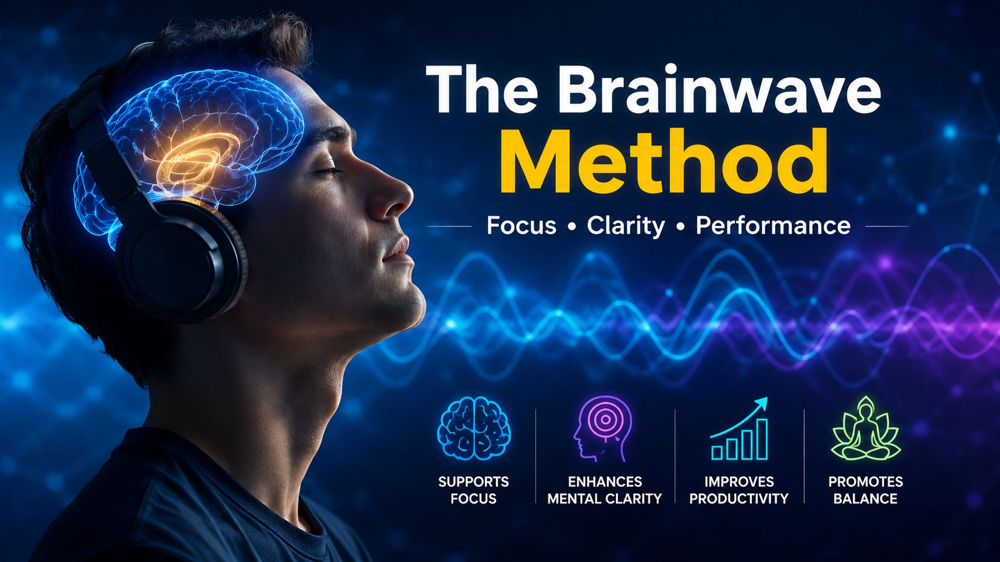

🔒 Secure · 100% Natural · No medication
Do you ever feel like no matter how hard you try, your mind just won't cooperate? Brain fog, lack of focus, that constant feeling of running at half-power — it's not your fault, and there's a very specific reason it's happening.
Neuroscientists have identified a specific Gamma brainwave pattern closely linked to peak cognitive states — the same state associated with elite performers, creative thinkers, and highly productive individuals.
The problem? Chronic stress, screen overload, and poor sleep progressively suppress this wave. When it goes quiet, you feel it: scattered thoughts, low energy, a brain that just won't click into gear.
A team of neuroscientists spent years researching how to naturally restore this brainwave state — without extreme meditation routines, expensive equipment, or prescription medication.
The result is a precise soundwave technology that uses specific audio frequencies to help guide your brain back into its natural high-performance state. You simply put on headphones, press play, and let the science do the work.
Binaural frequencies act directly on your nervous system, helping lower cortisol so you feel calm and in control — from your very first session.
As your Gamma wave reactivates, the brain fog lifts. Thoughts become organized, sharp, and effortless to act on.
No hours of meditation or complex routines. Just headphones and 7 minutes — your brain takes care of the rest.
🔒 Secure page · 100% Natural · No medication required